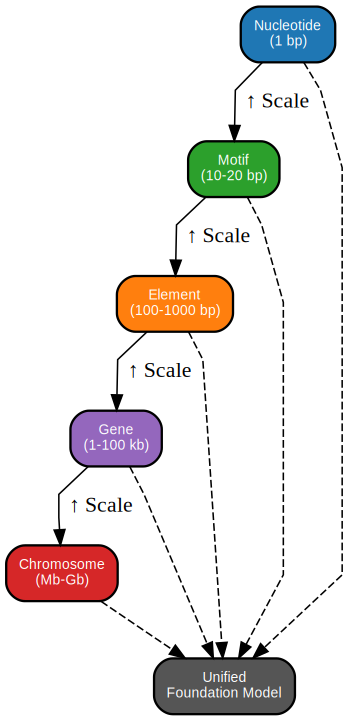
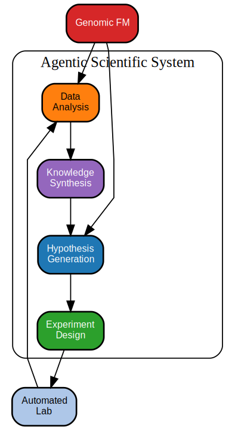
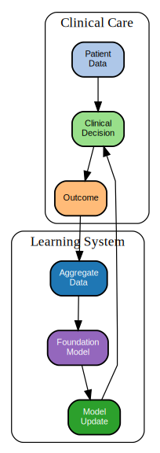

31 Frontiers and Synthesis
The future arrives unevenly, and faster than we expect.
Prerequisites: This capstone chapter synthesizes material from the entire book. Readers should be familiar with foundation model architectures (Part III), multi-modal integration approaches (Part IV), and responsible deployment considerations (Part V). Key background includes uncertainty quantification (Chapter 23), interpretability (Chapter 24), causal inference (Chapter 25), and regulatory governance (Section 26.1).
Learning Objectives: After completing this chapter, you should be able to:
- Identify the three major open technical challenges limiting genomic foundation model impact
- Evaluate emerging directions—multimodal architectures, agentic systems, and learning health systems—in terms of both promise and risk
- Articulate why capability and trustworthiness are both necessary for clinical translation
- Assess specific technical bottlenecks (scaling, multi-scale integration, causality) in their research or application context
- Synthesize the themes from preceding chapters into a framework for evaluating future developments
Key Insight: The gap between a model that predicts well on benchmarks and a patient who benefits from better care encompasses not just technical challenges but the full complexity of clinical translation—validation, workflow integration, equitable access, and ongoing governance.
In 2019, predicting protein structure from sequence alone seemed decades away. By 2024, AlphaFold had rendered it essentially solved. In 2020, generating coherent paragraphs of text required specialized tuning; by 2025, language models could write, code, and reason across domains with minimal prompting. These discontinuous advances suggest that the genomic foundation models surveyed in this book may be on the cusp of capabilities we cannot fully anticipate—capabilities that could reshape clinical genetics, drug discovery, and our understanding of human biology within the careers of current trainees.
Yet predicting when matters less than preparing for what. The gap between a model that performs well on benchmarks and a patient who benefits from better care encompasses not just technical challenges but the full complexity of clinical translation: validation, workflow integration, equitable access, and ongoing governance. This final chapter examines the technical problems that remain unsolved, the emerging directions that may address them, and the path from research capabilities to clinical impact.
31.1 Open Technical Problems
The technical challenges surveyed in preceding chapters remain only partially solved. Foundation models for genomics have demonstrated remarkable capabilities, but they operate far below theoretical limits and fail in ways that better architectures, training strategies, or data could address. Three challenges stand out as particularly important for the field’s trajectory: scaling models to capture biological complexity, integrating information across biological scales, and moving from correlation to causal and mechanistic understanding. Progress on any of these fronts would unlock applications currently beyond reach.
Before reading about specific technical challenges, reflect on your own experience with genomic models (or machine learning models more broadly): What are the most frustrating limitations you have encountered? Are they due to insufficient model capacity, wrong training data, inappropriate evaluation, or something else entirely? Keep your answer in mind as you read this section.
31.1.1 Scaling and Efficiency
The largest foundation models in natural language processing now exceed a trillion parameters and were trained on trillions of tokens (Fedus, Zoph, and Shazeer 2022; Chowdhery et al. 2022). Genomic foundation models remain substantially smaller, with typical models ranging from hundreds of millions to low billions of parameters. Whether genomic applications require comparable scale remains uncertain. The human genome spans 3 billion base pairs and encompasses perhaps 20,000 protein-coding genes, a smaller and more constrained space than natural language. But capturing the full complexity of gene regulation, protein structure, and cellular context may require parameter counts that approach or exceed language model scale.
Scaling genomic foundation models faces several bottlenecks. Training data availability constrains scale when models exhaust unique sequences and must rely on data augmentation or repetition. Compute costs remain prohibitive for most academic groups and limit experimentation with truly large architectures. Long sequence lengths required for genomic context (regulatory elements can span hundreds of kilobases) create quadratic attention costs that limit practical context windows despite architectural innovations (see Chapter 7).
| Bottleneck | Current State | Potential Solutions |
|---|---|---|
| Training data | Finite unique genomes (~100k species with assemblies) | Multi-species pretraining, synthetic data, data augmentation |
| Compute cost | Trillion-parameter models cost $10M+ to train | Sparse attention, state space models, knowledge distillation |
| Context length | Quadratic cost limits practical windows to ~100kb | Linear-time architectures (Mamba), chunking strategies |
| Evaluation | Benchmarks saturate before biological problems solved | Task-specific evaluation, clinical validation |
Efficiency improvements that reduce compute requirements without sacrificing capability are thus particularly valuable for genomic applications. Approaches include sparse attention patterns that avoid full quadratic costs, state space models that process sequences in linear time (Gu and Dao 2024), knowledge distillation that transfers capability from large models to smaller ones, and quantization that reduces precision requirements for inference (see Appendix B). Sparse attention achieves efficiency by computing attention only between nearby tokens or predetermined patterns rather than all pairs, reducing complexity from O(n^2) to O(n) or O(n log n) at the cost of limiting which long-range dependencies can be captured. State space models replace attention entirely with recurrent computations that maintain a fixed-size hidden state, enabling linear-time processing but requiring the model to compress all relevant context into that finite state. Knowledge distillation trains a smaller “student” model to match the outputs of a larger “teacher,” preserving much of the teacher’s capability in a more deployable form. Each approach involves trade-offs between efficiency gains and capability preservation that must be evaluated empirically on genomic tasks.
The scaling laws that govern language models may not directly transfer to genomic applications. Genomic sequences have different statistical properties (lower entropy, stronger long-range dependencies, reverse-complement symmetry), and biological function imposes constraints absent in natural language. A model that memorizes more of the genome is not necessarily better at predicting variant effects or gene regulation. The key question is not “how big?” but “what capabilities emerge at what scale for which tasks?”
31.1.2 Context and Multi-Scale Integration
Biological phenomena span scales from nucleotides to ecosystems. Foundation models must integrate information across these scales to capture biological reality: local sequence motifs, regulatory element architecture, chromosome-level organization, cellular context, tissue environment, organism-level physiology, and population-level variation all contribute to genotype-phenotype relationships.
Current approaches typically focus on single scales or model multi-scale relationships implicitly through large training datasets rather than explicitly through architectural design. A DNA language model processes sequence tokens without explicit representation of chromatin structure. A single-cell model embeds cells without explicit representation of tissue organization. A regulatory model predicts expression without explicit representation of 3D genome contacts.
Can you map each of the following model types to the scale(s) they primarily operate at? (1) ESM-2, (2) Enformer, (3) scGPT, (4) Akita, (5) AlphaMissense
Hint: Review the model taxonomy from Section 13.4 and the specific model chapters if needed.
Architectures that explicitly integrate across scales remain a frontier. Hierarchical models that compose representations at different resolutions, graph neural networks that encode biological relationships across scales (Section 21.2.2), and hybrid systems that combine modality-specific encoders with cross-modal attention layers all represent active research directions. Success will require not just architectural innovation but appropriate training data that captures multi-scale relationships and evaluation protocols that probe multi-scale reasoning.

31.1.3 Causality and Mechanism
The distinction between correlation and causation pervades genomic analysis. A variant associated with disease in genome-wide association study (GWAS) may be causal, in linkage disequilibrium with a causal variant, or confounded by population structure or other factors (Section 3.3). A regulatory element predicted to affect expression may directly drive transcription or may merely co-occur with other causal elements. Foundation models, like other statistical learners, capture patterns in training data without distinguishing causal from correlational relationships.
Foundation models learn statistical associations from data. When a DNA language model assigns high likelihood to a sequence, it indicates the sequence is consistent with patterns in the training corpus—not that the sequence functions in any particular way. When a variant effect predictor scores a mutation as deleterious, it reflects features associated with pathogenic variants in training data—not necessarily the causal mechanism of pathogenicity. This distinction, discussed in detail in Chapter 25, remains the central limitation for applications requiring mechanistic understanding.
Progress toward causal and mechanistic reasoning in genomic AI likely requires integrating diverse evidence types. Perturbation experiments (CRISPR knockouts, drug treatments, environmental exposures) provide interventional data that can distinguish causal effects from correlations. Mendelian randomization approaches leverage genetic instruments to estimate causal effects from observational data (Davey Smith and Ebrahim 2003). Structural causal models provide formal frameworks for encoding and reasoning about causal relationships.
Incorporating causal structure into foundation models is technically challenging. Causal relationships are often unknown, contested, or context-dependent. Training objectives that encourage causal reasoning must balance causal accuracy against predictive performance on tasks where correlation suffices. The tension arises because exploiting correlations often improves prediction accuracy in the short term: a model that learns “variant X associates with disease Y” can predict well on held-out data from the same distribution, even if X is merely linked to the true causal variant. However, such correlational models fail when the linkage structure changes across populations or when the goal is to predict intervention effects rather than associations. Evaluation of causal reasoning requires benchmarks with known causal ground truth, which are scarce for complex biological systems because establishing true causation requires controlled experiments that are often infeasible in humans.
| Approach | Mechanism | Limitations | Chapter Reference |
|---|---|---|---|
| Mendelian randomization | Uses genetic variants as instruments for causal inference | Requires valid instruments; pleiotropy confounds | Section 25.2.1 |
| Perturbation screens | Direct experimental intervention (CRISPR, drugs) | Expensive; context-specific; off-target effects | Section 25.4.1 |
| Structural causal models | Explicit DAG representation of causal relationships | Requires prior knowledge; difficult to scale | Section 25.5 |
| Counterfactual prediction | Model what would happen under intervention | Training data observational; extrapolation risk | Section 25.3.3 |
31.2 Emerging Directions
Beyond incremental improvements to existing approaches, several emerging directions may reshape how genomic foundation models develop and deploy. Multimodal architectures that jointly model sequence, structure, expression, and phenotype could capture biological relationships invisible to single-modality models. Agentic systems that autonomously design experiments, interpret results, and iterate toward biological goals could accelerate discovery while raising new governance challenges. Clinical integration through learning health systems could enable models that improve continuously from deployment experience. Each direction carries both promise and risk; realizing benefits while managing harms will require technical innovation alongside thoughtful governance.

31.2.1 Multimodal Integration
Current genomic foundation models largely operate on single modalities: DNA sequence, protein sequence, gene expression counts, chromatin accessibility signals. Biological reality is irreducibly multimodal, with information flowing across modalities through transcription, translation, signaling, and metabolism. The next generation of genomic foundation models will need to integrate across modalities more deeply, building on the multi-omic approaches discussed in Chapter 22.
Early multimodal genomic models combine encoders trained separately on different modalities, using cross-attention or shared embedding spaces to enable cross-modal reasoning. More ambitious architectures train end-to-end on multimodal data, learning unified representations that capture relationships between sequence and structure, expression and chromatin state, genotype and phenotype. The data requirements for such training are substantial, requiring aligned measurements across modalities at scale.
Consider a clinical scenario where you want to predict which patients will respond to a new cancer immunotherapy. What modalities would be most informative? Sequence (tumor mutations)? Expression (immune infiltrate signatures)? Imaging (tumor microenvironment)? Clinical history (prior treatments)? How would you combine them, and what challenges would arise?
This exercise illustrates why multimodal integration is both essential and difficult for clinical applications.
Clinical applications particularly benefit from multimodal integration. A diagnostic model that combines genomic variants with electronic health record data, imaging findings, and laboratory values can capture patterns invisible to any single modality. A prognostic model that integrates germline genetics with tumor transcriptomics and treatment history can personalize predictions in ways that purely genetic models cannot. Building such systems requires not just technical capability but also data governance frameworks that permit multimodal combination while protecting privacy.
For researchers beginning multimodal projects:
- Start simple: Late fusion (separate encoders, combined predictions) provides a baseline before attempting end-to-end training
- Align carefully: Ensure samples are truly matched across modalities; batch effects compound across modalities
- Handle missing data: In clinical settings, not all patients have all modalities; design for graceful degradation
- Evaluate per-modality: Understand what each modality contributes before combining
- Consider causality: Which modalities are upstream (sequence) versus downstream (expression)? This affects how to interpret integration
See Section 22.2 for detailed integration strategies.
31.2.2 Agentic and Closed-Loop Systems
Foundation models have traditionally operated as passive tools: given an input, they produce an output, and humans decide what to do with it. Emerging agentic architectures allow models to take actions, observe outcomes, and adapt behavior based on feedback. In genomic contexts, agentic systems might design experiments, interpret results, revise hypotheses, and iterate toward biological goals with minimal human intervention.
Closed-loop systems couple computational prediction with experimental validation in automated cycles. A design model proposes sequences optimized for a target function. An automated synthesis and screening platform tests proposed sequences. Results feed back to update the model or guide subsequent proposals. Such systems can explore sequence space far more efficiently than sequential human-directed experimentation, as discussed in the design-build-test-learn cycles of Section 30.6.
Agentic systems raise governance questions absent from traditional models:
- Objective specification: How do we ensure the optimization objective captures what we actually want?
- Monitoring and oversight: How do we detect when the system pursues unintended goals?
- Stopping criteria: When should autonomous operation halt for human review?
- Accountability: When an autonomous system makes an error, who is responsible?
- Dual use: How do we prevent agentic systems from being misused for harmful purposes?
These questions connect to the biosecurity considerations in Section 26.6 and require governance frameworks that evolve with technical capabilities.
The promise of agentic and closed-loop approaches is accelerated discovery: identifying functional sequences, characterizing biological mechanisms, and optimizing therapeutic candidates faster than traditional workflows. The risks include models pursuing objectives that diverge from human intent, experimental systems generating safety hazards, and accountability gaps when autonomous systems make consequential errors. Realizing benefits while managing risks requires careful attention to objective specification, monitoring and oversight mechanisms, and safety boundaries that constrain autonomous action.
31.2.3 Clinical Integration and Learning Health Systems
The ultimate test of genomic foundation models is whether they improve health outcomes. Moving from research demonstrations to clinical impact requires integration into care workflows, evidence of benefit from prospective studies, regulatory clearance, and sustainable business models that support ongoing development and maintenance.
Learning health systems provide a framework for continuous improvement: clinical use generates data that feeds back into model refinement, creating virtuous cycles where models improve as they serve more patients. The virtuous cycle works because clinical deployment reveals failure modes invisible in research datasets: patients with rare phenotypes, populations underrepresented in training data, and edge cases that benchmarks miss all surface during real-world use. Each model prediction becomes a natural experiment whose outcome can inform future predictions. However, such systems raise governance questions about who controls the learning process, how improvements are validated before deployment, and how benefits and risks are distributed across patients, providers, and technology developers.
The foundation model paradigm offers particular advantages for learning health systems. Pretrained models can be adapted to local populations and practices through fine-tuning on institutional data (?sec-ch09-full-finetuning; ?sec-ch22-domain-adaptation). Improvements demonstrated at one institution can potentially transfer to others through shared model updates. Common architectures enable comparison across sites and accumulation of evidence across diverse populations.

A learning health system is deployed at three hospitals. After six months, Hospital A (large academic center) shows improved outcomes while Hospital B (community hospital) and Hospital C (rural clinic) show no change. What are three possible explanations, and what would you do to investigate?
This scenario illustrates why deployment alone is insufficient without careful monitoring and equity analysis.
Realizing this vision requires infrastructure for secure data sharing, governance frameworks that enable learning while protecting privacy, regulatory pathways that accommodate evolving systems, and clinical workflows that support appropriate use and oversight. Technical capabilities alone are necessary but not sufficient. Genomic foundation models will achieve their potential only through sustained collaboration among technologists, clinicians, patients, policymakers, and communities working together to build systems that are both capable and trustworthy.
31.3 Work Ahead
The ultimate test of genomic foundation models is whether they improve health outcomes. The technical capabilities surveyed in the preceding chapters, from sequence representations through foundation model architectures to clinical applications, are necessary but not sufficient for that goal. Between a model that predicts well on benchmarks and a patient whose diagnosis comes faster or whose treatment works better lies the full complexity of clinical translation: validation across populations, integration into workflows, regulatory approval, equitable access, and ongoing monitoring for drift and harm.
Benchmark performance is seductive but insufficient. A variant effect predictor with state-of-the-art AUC may fail to improve clinical outcomes if:
- It performs well on average but poorly for underrepresented populations (Section 12.10)
- Its predictions are uncalibrated and clinicians cannot interpret confidence levels (Section 23.2)
- It flags the same variants that existing tools flag, adding no new information
- It cannot integrate into existing clinical workflows without disruptive changes
- Regulatory uncertainty prevents adoption despite technical merit
Each of these failure modes requires different solutions—technical, organizational, regulatory, or social.
Learning health systems provide a framework for bridging this gap: clinical use generates data that feeds back into model refinement, creating virtuous cycles where models improve as they serve more patients. Such systems raise governance questions as important as the technical ones. Who controls the learning process? How are improvements validated before deployment? How are benefits and risks distributed across patients, providers, and technology developers? How do we ensure that populations underrepresented in training data are not further disadvantaged by systems that learn primarily from others?
As you finish this book, consider: What is the most important problem in your domain that genomic foundation models could help solve? What would success look like? What are the barriers—technical, regulatory, social, or economic—between current capabilities and that success? This reflection can guide your next steps, whether in research, clinical application, or policy.
Genomic foundation models will achieve their potential only through sustained collaboration among technologists, clinicians, patients, policymakers, and communities working together to build systems that are both capable and trustworthy. Capability without trustworthiness is dangerous: models that predict accurately but fail silently for certain populations cause harm even as they help others. Trustworthiness without capability is insufficient: systems that are transparent and fair but do not improve on existing practice offer nothing worth adopting. Technical achievements in genomic deep learning enable new capabilities; the human systems that govern their development and deployment will determine whether those capabilities translate into genuine benefit for the patients and populations that genomic medicine aims to serve.
Core Concepts:
- Open technical problems: Scaling (data, compute, context length), multi-scale integration (nucleotide to organism), and causality (distinguishing correlation from mechanism) remain fundamental challenges
- Emerging directions: Multimodal architectures, agentic systems, and learning health systems each offer promise alongside new governance challenges
- Translation gap: Benchmark performance is necessary but insufficient; clinical impact requires validation, workflow integration, regulatory approval, and equitable access
Key Connections:
- Scaling challenges connect to architectural choices (Chapter 7) and efficiency techniques (Appendix B)
- Multi-scale integration builds on single-cell (Chapter 19), 3D genome (Chapter 20), and network approaches (Chapter 21)
- Causality challenges extend the discussion from Chapter 25
- Governance requirements connect to Section 26.1 and responsible development practices
Looking Forward:
The field stands at an inflection point. Technical capabilities have advanced dramatically, but realizing clinical impact requires progress on multiple fronts simultaneously—not just better models, but better evaluation, better integration, better governance, and better collaboration across disciplines. The work ahead is not just technical; it is fundamentally human.
Further Reading: